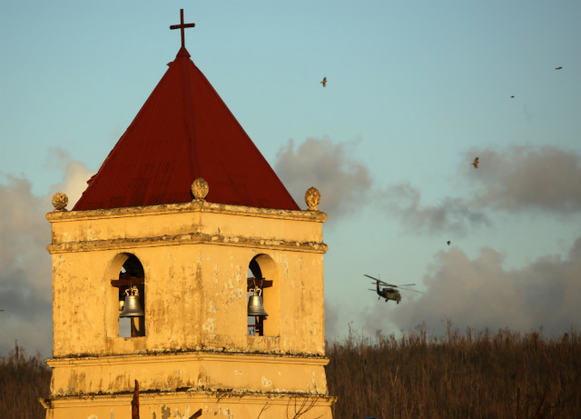

Rich in history and national significance, Balangiga Church in Eastern Samar stands as a powerful reminder of courage, resistance, and faith. Officially known as the Church of St. Lawrence the Martyr, this historic site is closely tied to one of the most notable events in Philippine history, the Balangiga Massacre, making it both a place of worship and a symbol of the Filipino struggle for independence.

Balangiga church gained historical prominence during the Philippine-American War when Filipino revolutionaries launched a surprise attack against American troops stationed in the town of Balangiga in 1901. The event led to a harsh retaliation by American forces, resulting in the tragic Balangiga Massacre. The church itself played a central role in the uprising, as its bells were reportedly used to signal the start of the attack.
Today, the church has been restored and continues to serve as an active place of worship for the local community. One of its most significant symbols, the Balangiga Bells, was returned to the Philippines after more than a century in the United States, marking a moment of historical reconciliation and national pride. Visitors to the site can explore not only its religious significance but also its deep connection to the country’s past and identity.

Balangiga church is linked to the Balangiga Massacre during the Philippine-American War.
The famous Balangiga Bells were returned to the Philippines in 2018 after over a century abroad.
It remains one of the most historically significant sites in Eastern Samar and the Philippines.